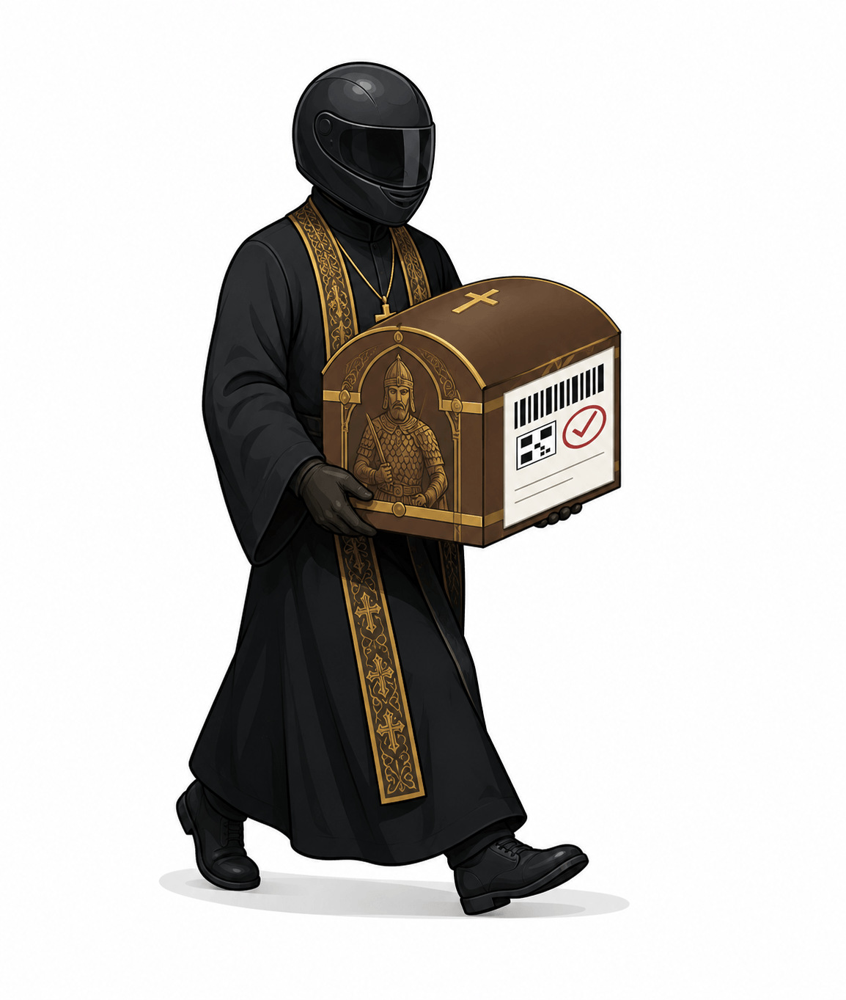
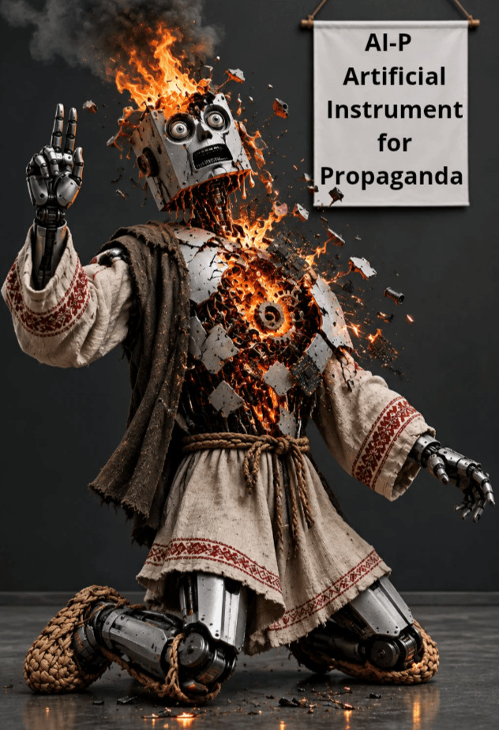

Olga Shcheglova (Boris Bidyaga)
The Tale of How the Plain Old Truth Became Sovereign
Saboteurs in the Raspberry Patch
The Izborsk Referendum and the Baptism of the Moon
SCENE 1. The Kremlin Briefing
Four figures sit around a massive oak table, chins propped on their hands. On the wall above them hangs a giant interactive screen, glowing and flickering with a slogan about the nation's forward march.
MISHUSTIN (tapping impatiently on the table):
— Colleagues, the concept is stalling. From a physics standpoint, translational motion requires a vector. But once we digitize our current macroeconomic indicators, what we get is movement in a strictly undefined direction. Three neural networks at the Ministry of Digital Development collapsed under the weight of this task. They still can't get the servers to cool down.
SOBYANIN (smiling smoothly):
— Mikhail Vladimirovich, you're overcomplicating things. What difference does the direction of the vector make if the infrastructure works? Look at Moscow. Progress that moves in a circle — now that's our perfect vector! We launch the Big Circle Line, the Moscow Central Circle, we lay paving stones along the first ring, then the second, then the Garden Ring. Everyone stays busy, the budget gets used up, the pace is breathtaking. And the fact that we keep returning to the exact same spot — well, that's what stability is all about. With a trajectory like this, the economy is insured against ever accidentally plunging into an abyss. We have no need for your vectors. The main thing is that the curbstones get delivered on schedule.
PATRUSHEV (grumbling, without looking up from a folder stamped "Open Secret"):
— Strange thing to say, Sergei Semyonovich. Moving in circles offers no ironclad guarantee against internal and external threats. The moment a single element looks away, your whole "dynamic" will fly off at a tangent straight into the arms of our geopolitical adversaries. We need a secure perimeter. Three rows of barbed wire, watchtowers, signal jammers. That's what lets us balance on the edge of the deepest abyss indefinitely. And whatever trajectories the movement takes inside the perimeter is of no consequence whatsoever. Security comes first.
KIRIYENKO (with a conciliatory smile):
— Colleagues, each of you is right in his own way. What we need are fresh KPIs to reframe our old objectives. Take "The Movement of the First," for instance. Too vague. Too indefinite. It lacks punch. Let's rebrand it as the "Sovereign Circular Dynamics of the First." Spot on — there's enormous untapped potential here. Don't worry, colleagues, we'll satisfy everyone's needs. The technocrats get their beautiful Excel spreadsheets, Muscovites get new electric river trams with heated seats, and to the security bloc we guarantee that no one will slip past the contour's boundaries alive. Tomorrow we launch the new propaganda campaign. High time we refreshed our weathered facade.
SCENE 2. Perpetual Motion
A vast field, trampled down to gray-yellow dust, marked with two concentric circles. The outer perimeter is tightly enclosed by three rows of barbed wire, heavy quadcopters buzzing lazily overhead. At the four corners, guards stand frozen atop tall wooden watchtowers, their faces as if carved from gray granite — menacing, heavy-jawed, unblinking. They grip their rifles, lazily spitting out sunflower-seed shells.
Inside the perimeter, life boils over. Around the vast outer circle runs a disorganized mob of adults, jostling elbows and stumbling — "important people" in sharp but rumpled suits, clutching leather briefcases. They wheeze, cut each other off at the turns, collapse in the dust, scramble up instantly, and jog on with a businesslike air, now and then accelerating to overtake a neighbor. On the run they snatch prizes from one another's hands: shiny trinkets, plastic certificates, ration coupons for sugar, dropped down periodically by the guards. The whole roaring, frantic crowd moves at an impressive clip, kicking up dust that swallows the fence, the towers, even the sun.
Inside the large circle, safely hidden by the crowds of running adults, lies a smaller one. There, in the relative shade, the younger generation runs — all in identical tricolor sun hats, pushing and treading on each other's heels in the same chaotic fashion.
Unlike the adults, trapped in the race all day, the children are allowed breaks. During these, in schools and kindergartens, they are treated to "Important Conversations."
SCENE 3. "Conversations about important things"
The "Little Sun" Kindergarten. A large hall, the air thick with the stubborn smell of bleach and burnt braised cabbage. The children sit on the floor in a wide semicircle. Facing them stands the teacher, clutching a tricolor flag. In the middle of the room, a toy circular railway hums quietly — a three-car train pulled by a locomotive. Every time it passes the station, it slows, the driver leans out the window, and shouts: "Cuckoo!"
The teacher waves her flag: "Children, all together! One, two, three, go!"
The pupils, joyful smiles plastered across their faces, shout back in unison: "Cock-a-doodle-doo!"
The train chugs on toward the next loop. Past the building blocks, past a dejected teddy bear with a torn ear, past a blank wall. A low hum. The station.
DRIVER:
— Cuckoo!
CHILDREN'S CHORUS:
— Cock-a-doodle-doo!
TEACHER:
— Children, why do we like it when the train goes in circles?
CHILDREN'S VOICES:
— Standability!
— Dictability!
— Security!
TEACHER:
— Correct. Stability, predictability, and security.
The train approaches the station once more. The driver leans out.
DRIVER:
— Cuckoo!
CHILDREN'S CHORUS:
— Cock-a-doodle-doo!
Only one boy, sitting in the far corner, doesn't join the chorus. On his head sits a ridiculous, shiny little cap, folded from the foil wrapper of an Alyonka chocolate bar. While the other children stand open-mouthed, catching the invisible waves radiating from the router, the silver dome on his head vibrates, almost imperceptibly, reflecting them right back.
SCENE 4. The Tinfoil Cap vs. Sovereign Circular Dynamics
On the one hundred and twentieth loop, the train jerked and derailed, coming to a halt a mere two meters short of the station. The cheap Chinese axle on the wheelset had snapped, and a wheel from the locomotive rolled, with great ceremony, into the middle of the room.
The train was broken. The driver did not lean out the window. The "Cuckoo" never sounded.
A dead, ringing silence fell over the hall. The children froze, their faces masks of anxiety and fear. The teacher herself turned to stone, her tricolor flag frozen aloft, confusion and dread written across her face. A heavy, oppressive stupor settled over the room — as though it wasn't the axle of a toy locomotive that had snapped, but the very axis their small, simple world turned on.
Only the boy in the tinfoil cap stayed calm and unbothered. He rose slowly to his full height. He looked around at his peers, frozen like pillars of salt. He looked at the teacher, her eyes gone glassy.
— What are you all so scared of? — the boy said, calm and certain, adjusting his cap. — They're just messing with our heads.
He stepped forward, treading indifferently on the plastic tracks. The fragile contour snapped under his boot with a loud crunch, shattering into pieces.
The boy walked out of the kindergarten and headed straight for the training grounds. First he cut through the crowd of children on the smaller circle. The toddlers in their bucket hats minced along, breathing hard, staring straight ahead. He squeezed through — no one noticed him, every eye fixed on the adults running the outer ring.
Out there it was hot and filthy. The "important people" in rumpled suits roared and wheezed, shoving each other with their elbows, racing to reach the prizes and coupons first. The boy pushed through the dense crowd, reeking of sweat and dust. They bumped into him without seeing him, veering around him like a minor nuisance.
Having crossed both circles at last, the boy reached the guarded perimeter. Unlike the people, the system reacted at once. The guards on the tall wooden towers sprang to life, their granite faces twisting with rage as they raised their rifles in unison and chambered rounds with a dull mechanical click. Threats blared from hidden loudspeakers across the field, along with demands that he return to the "Little Sun" Kindergarten at once.
The boy stopped at the wire. For about five minutes he studied the fence, the towers, the guards, watchful and unhurried. Then he bent down and picked up a heavy stone.
— You're nothing but a picture, — he said, softly but clearly. He drew back his arm and hurled the stone with all his strength straight into the center of the colorful panorama.
Smash! Crack! The illusion of total control shattered into dust in an instant. The immense digital facade imploded with a deafening ring, splintering into a myriad of glass shards and sparking diodes. In a heartbeat the barbed wire, the wooden towers, the terrifying guards turned into the black, dead pixels of a broken LED screen. Through the gaping breach in the endless monitor, a gust of fresh wind rushed onto the trampled ground, followed by a flood of real, unfiltered sunlight. Behind the imaginary fence there was nothing but a boundless, wild field.
The boy stepped easily over the broken glass and, without looking back, walked off along a true, horizontal vector.
SCENE 5. Was There Ever a Boy?
The unsanctioned departure of a monitored subject jolted the teacher back to her senses. She crossed the room in quick strides, then broke into an awkward, hopping run after the boy.
But he was already far off. She called after him again and again, ordering him to come back, but he never slowed, never even turned his head.
When she reached the hole the stone had smashed in the endless monitor, what she saw struck her like a blow. What she felt was not joy, not wonder, not surprise. It was animal, primal fear.
She spun on her heel and hurried back to the kindergarten. Once inside familiar surroundings, she calmed at once. The train's sudden breakdown no longer felt like a tragedy. She cast a stern look over the children and, calm and confident again, proposed they carry on with the lesson.
— The train's being repaired, nothing to worry about, — she said. — While it's being fixed, we'll be the train ourselves. Petya, you're the locomotive. Kolya, Misha, and Alyosha, you're the carriages. And Senya is hereby appointed driver. All right, children — let's go!
And once again, just as in the good old days, the eternal "Cuckoo" rang out through the room, and back came its sovereign echo: an elaborate "Cock-a-doodle-doo."
And the teacher, watching the scene, was moved to tears, thinking: "How wonderfully, how rightly our life is arranged! As for the boy — he was just a lost sheep. Was there ever really a boy, come to think of it? Maybe there was no boy at all."
BACKGROUND NOTE FOR THE ENGLISH READER
Mikhail Mishustin has been Russia's Prime Minister since 2020. A former head of the Federal Tax Service, he's known for a data-driven, spreadsheet-and-metrics managerial style — the archetypal technocrat who wants a "vector" for everything.
Sergei Sobyanin has been Mayor of Moscow since 2010. His tenure is associated with constant, highly visible infrastructure projects — new transit rings, and above all the relentless re-laying of Moscow's sidewalk paving stones and curbstones, a running joke among Muscovites about municipal spending that produces motion without progress.
Nikolai Patrushev headed the FSB (1999–2008) and then served sixteen years as Secretary of Russia's Security Council — long considered the most hawkish, security-obsessed figure in Putin's inner circle. In May 2024 he was moved to the more ceremonial post of presidential aide overseeing shipbuilding, widely read as a demotion, though he's assumed to retain influence. The character keeps his old security paranoia regardless of the new job title.
Sergei Kiriyenko is First Deputy Chief of Staff of the Presidential Administration, overseeing domestic policy and propaganda — including the "Movement of the First", a real state youth movement launched in 2022 as a spiritual successor to the Soviet Pioneers. He's the regime's rebranding specialist, the one who can turn any embarrassment into a shiny new slogan.
"Was there ever a boy?" is one of the most famous lines in Russian literature, from Maxim Gorky's novel "The Life of Klim Samgin" (1925–1936). As a child, Klim saw a boy fall through the ice. But out of fear, he didn't try to save him. Later, to ease his pangs of conscience, he convinced himself that the incident had never actually happened. The phrase "But was there ever a boy?" has since become a Russian idiom for retroactively denying that an inconvenient event ever took place.
#OrthodoxMilitaryPutinism

ACT I
The Non-Aggression Pact
The office smelled of school chalk, old linoleum, and an approaching thunderstorm. A cuckoo clock on the wall, its cuckoo silent for years, counted the third hour of the night.
Vasissualy Ivanovich, chairman of Polling Station No. 1234, stood before a grey metal safe, poised as if about to leap into the abyss. He wore black desk-sleeves over his blue three-piece suit, which was looking rather threadbare at the elbows. In his hands he held a utility knife and a brand-new, faux-crocodile leather official briefcase.
Vasissualy Ivanovich looked at the dark window, where poplar trees rustled outside, and quietly sighed into the empty room:
— Perhaps this is just how it's meant to be? Perhaps this nightly act of penance is where the plain old truth of Russian statehood truly lies? In the triumph of order over total chaos?
He knelt in front of the safe. His knees buckled with a dry, almost biblical crack. The safe refused to budge. The plastic seal felt to Vasissualy Ivanovich like the mark of the beast, blocking his path toward absolute harmony.
He called to mind the literary classics.
— Lokhankin... — Vasissualy Ivanovich whispered, prying at the seal with the tip of his blade. — Vasissualy Andreyevich, my brother in soul-searching and suffering! I despise you. You were a thief. Let’s call a spade a spade — you sneaked around at night, shamefully pinching pieces of boiled chicken from someone else’s pot. Just to satisfy your base, fleshly desires. Petty selfishness, utterly unworthy of a Russian intellectual!
The blade slipped, and Vasissualy Ivanovich pricked his finger painfully. He hissed but kept his eyes glued to the safe, a spark of true, otherworldly selflessness igniting in his gaze.
— But look at me! — He pressed his bleeding finger to his chest, right over his heart. — Do I steal? Do I take home even a single miserable penny of the taxpayers' money? Or even one lousy ballot? No! My hands are clean; my mission is noble and exalted. I’m not a taker — if anything, I’m a giver! I bring to this safe what it so desperately lacks: completion! I enrich this poor, mute iron box with the warmth of human care. I am the hand that feeds, not the hand that bleeds!
Vasissualy Ivanovich took a trembling breath, wiped the sweat from his brow with a clean handkerchief, and pulled a sealed bundle of pre-marked ballots from his briefcase. He felt like Atlas, lifting the falling sky.
At that very moment, the classroom door creaked softly, and the silhouette of a sharp-eyed observer holding a flashlight appeared in the doorway.
— Nikita Sergeyevich... — whispered the chairman, turning pale as a ghost, already imagining the absolute roasting he would get at tomorrow’s committee meeting.
Caught dead to rights, he froze mid-stride like a startled heron in a marsh.
— It’s not what it looks like, — Vasissualy Ivanovich stammered nervously. — This is an act of pure altruism...
The nighttime intruder, a student observer named Nikita, stood just three steps away. Instead of a smartphone, he was holding... the exact same kind of utility knife, and an empty backpack.
A long, highly dramatic silence hung in the air.
The chairman was the first to break the ice, dropping his voice to a tense theatrical whisper:
— Nikita... Is that you? But what about... your credentials? The democratic process? Total transparency? Have you come here to tear down the very fabric of our system?
— What system, Vasissualy Ivanovich? — the student smiled bitterly, hopping onto the teacher’s desk. — I came to clean house. To seize this garbage, this fraud, this so-called "plain old truth" of yours. I wanted to save the final tally, to scrub it clean of corruption! To fish out of this iron box everything you stuffed into it during the day!
Vasissualy Ivanovich dropped his foot and bristled with indignation, his fear vanishing for a split second:
— Fish it out?! Desecrate a sacred trust? You're a vulture, Nikita! You're no better than Panikovsky, plotting to rob an underground millionaire! I am pouring my heart and soul into this! I'm not stealing, I'm adding value! I am sowing the seeds of stability, and you want to tear it all down? Leave us with nothing?
— Your “stability” is a sham! — Nikita fired back, stepping toward the safe. — I’m wiping the slate clean to restore the absolute purity of the people’s voice!
— Over my dead body! — Vasissualy Ivanovich threw himself in front of the grey metal safe. — If you empty this out, my books won't balance! Antonina Petrovna will bury me alive under the nearest highway!
— And if you stuff more in, my principles go out the window! And my report to headquarters is dead in the water! — Nikita lunged for the safe handle, but the chairman grabbed him by the wrist. The two men grappled.
It was by far the most absurd, low-stakes scuffle in the entire history of elections. They didn't throw a single punch. Instead, they just politely jostled each other with their elbows, trading sharp whispers and breathing heavily. One kept trying to cram the bundle into the safe, while the other tried to yank out what was already inside.
Twenty minutes later, completely wiped out, they both collapsed onto the floor right in front of the security camera, which had luckily been neatly turned to face the wall.
— Whew... — Vasissualy Ivanovich wiped his brow with his sleeve. — Alright, look. If you empty it, I’m toast. If I stuff it, your reputation is ruined. Why are we tearing each other to pieces?
— Fair point, — Nikita panted, catching his breath. — If I pull everything out, they’ll just throw out the results for the whole station. My three days of roughing it on a cot will go down the drain, and we won't prove a thing.
— And if I add any more, — the chairman reasoned, — the regional board will see we have a 102% voter turnout, and they’ll string me up anyway. For sheer incompetence.
They traded glances. You could practically smell a backroom deal cooking in the room.
— Nikita, — Vasissualy Ivanovich said, completely earnest. — Let’s face it: the system is fragile, and we’re just tiny cogs in the machine. What if we just... keep things as they are?
— Meaning what?
— You leave the inside alone, and I put what I brought back in my briefcase. We fix up the broken seal, you go back to your cot, and I go down some heart medication. The numbers stay exactly where they were yesterday. A draw. Perfect harmony.
Nikita looked down at his empty backpack, then at the chairman's exhausted, weary face.
— Screw it, Vasissualy Ivanovich. Fine. Let’s leave well enough alone. In the grand scheme of things, this one safe won't change a damn thing anyway.
They shook hands like men to seal their truce and called it a night.
ACT II
The Dressing-Down
The morning meeting of the Regional Electoral Board was a storm of biblical proportions. The board chairwoman, Antonina Petrovna — a lady with a beehive hairdo and the cold eyes of a veteran tax auditor — was ripping Vasissualy Ivanovich to shreds. Not over his morals, mind you. What really set her off was his monumental, jaw-dropping stupidity.
Vasissualy Ivanovich stood by the blackboard, looking thoroughly beaten down, as if he’d just survived a brutal hazing.
— Oh, look at our resident highbrow intellectual! — Antonina Petrovna slammed her fist on the desk, making the water pitcher rattle. — Our tragic little scholar! The whole team is popping sedatives like candy because of him, and he’s standing there without a care in the world! We only have one question for you, Vasya: how on earth did you manage to get caught?!
Vasissualy Ivanovich opened his mouth to launch back into his grand speech about "the hand that feeds" and the "plain old truth," but the chairwoman shut him down instantly:
— Everywhere else, people know how to play the game! They do it quietly, professionally, with a little finesse, and strictly behind closed doors. But this idiot had to put on a midnight amateur theater production! Fine, you slipped up. But explain to me, for God's sake, why on earth do you even have observers hanging around your station?! Any competent chairman would have run those nosy little do-gooders out of town days ago! You forge a doctor's note, you call the cops on a "suspicious package," or you just cover the chairs in grease. There are a million ways to skin a cat! But what do you do?
Antonina Petrovna took a deep breath and let out a glass-shattering shriek:
— You let this student move into the classroom!!! He basically lives there now! Why didn't you just roll out the red carpet and serve him tea on a silver platter?!
From the corner of the room, a supervisor from the mayor's office chimed in, lazily spinning an expensive Parker pen:
— Quite right, Vasissualy Ivanovich. In this business, you’re supposed to pad the numbers and lose the witnesses. But instead of doing basic math, you're giving us poetry and God knows what else.
— And to top it all off, he goes and signs a peace treaty! Playing the diplomat! The master strategist! A legendary statesman from the gutters! — Antonina Petrovna’s voice shook with pure, unadulterated rage. — Look at this refined gentleman! He held a global peace summit in a biology lab!
Vasissualy Ivanovich adjusted his glasses, which had slid down to the tip of his nose, and made a feeble attempt to stand his ground:
— Antonina Petrovna, it was a compromise... He wanted to take them out, I wanted to put them in. We found a happy medium in neutrality. We maintained the status quo! The final count didn't budge, and heaven knows how badly it could have ended otherwise!
— I don't give a damn about your status quo! — Antonina Petrovna slammed her fist so hard the pencil holder pulled a backflip and scattered across the desk. — Do you have any idea what you’ve done, Vasya?
Vasissualy Ivanovich soured, muttering under his breath:
— You’re a monster, Antonina...
Antonina Petrovna stood up, glaring daggers at the chairman:
— What was that, you bleeding-heart intellectual? A mole has set up shop right under your nose in the biology classroom, right under a poster of a crawfish! And you're signing midnight friendship pacts with him! You’re wrestling with him on the floor by the safe instead of throwing the little punk out on his ear. And then you call it a draw! I have targets to hit, I have quotas to meet, and this clown can’t even stuff a false ballot box without causing a public scandal... It’s pathetic!
The city supervisor in the corner gave a weary sigh and threw in his two cents:
— Yes, Vasissualy Ivanovich. Nobody wins here. The observer is sound asleep on a cot, the chairman is living on heart medication, and the final tally looks as if the election never even happened. Getting in bed with the auditor — now that’s a classic move. But why is he living in your biology room? You’ll need a crowbar to pry him out of there now.
Vasissualy Ivanovich hung his head in shame. He realized that his grand truce between opposing sides had found zero appreciation among the higher-ups.
«Perhaps this is just how it's meant to be, — he mused. — Perhaps this is where the plain old truth lies? There is no redemption without suffering, and through suffering comes clarity. So maybe the punishment itself holds the answers? But if the punishment is the plain old truth, then where does that leave the tragedy of the modern intellectual?»
ACT III
The Official Narrative (aka Sovereign Truth)
For a moment, Antonina Petrovna froze like a statue, her index finger pointing dramatically at the ceiling. In her eyes, which had been flashing fire and brimstone just a second ago, a stroke of pure bureaucratic genius suddenly sparked.
Her fury melted away into a warm, almost motherly glow. She looked at the silent Vasissualy Ivanovich as if he were a divine messenger who had just brought a blessing from above.
— Pure genius... — the chairwoman whispered, slowly sinking back into her chair. — Vasya, you’re no fool. You’re our greatest strategic asset!
The city supervisor in the corner stopped spinning his fancy Parker pen and sat up straight.
— Antonina Petrovna, what are you getting at? — Vasissualy Ivanovich asked, looking thoroughly exhausted.
— Local-level geopolitics, Vasya! — Antonina Petrovna slapped the desk triumphantly. — We’re not going to sweep this mess under the rug. We’re going to weaponize it! Why hide the fact that your little student was messing around with a box cutter by the safe? We’re going to turn this into a national scandal! We’ll tell the public exactly how opposition saboteurs sneak around at night, break into our secure facilities, and cynically hijack the democratic will of the people! From this moment on, your clumsy compromise is dead, Vasya. We are creating our own Sovereign Truth, and the public will swallow it whole!
The office instantly turned into a war room.
Within an hour, local TV stations, a dozen political social media channels, and the morning papers were breaking the story of the "nighttime desecration of the biology classroom."
Reporters were zooming in on the scratched safe lock and the blissfully unaware crawfish on the wall poster. Breaking news alerts screamed about a "loathsome plot to steal the votes of vulnerable seniors and decorated veterans."
Nikita, waking up on his folding cot, found himself blinded by TV cameras and cornered by an angry mob from the local PTA, who immediately berated him for stealing their children’s future.
Their little midnight truce shattered into a million pieces under the wheels of the state media machine.
Standing in front of the cameras, Vasissualy Ivanovich wrung his hands dramatically, weeping about the "assault on our core values" and the moral decay of modern reformists, feeling immensely proud of his new role as a guardian of the state.
Yet deep down, a quiet doubt gnawed at him. He thought: «The punishment never came, which means the suffering was called off. So where on earth is our plain old truth hiding now?» If this manufactured Sovereign Truth is all that matters now, then where on earth is our plain old truth hiding?»
ACT IV
The Grand Sovereign Truth Victory
Sunday evening arrived — the moment of truth, the counting of the votes. The entire electoral board sat on the edge of their seats before a massive screen displaying the live incoming data from the national electronic voting system.
Antonina Petrovna was nervously sipping her tea, the city supervisor was cross-referencing his spreadsheets, and Vasissualy Ivanovich stood quietly in the corner, praying his fragile balance wouldn't break.
The numbers started rolling in. The column for the ruling pro-government party surged upward so fast it looked as if it were being propelled by divine intervention.
Antonina Petrovna stared at the screen, wiped her glasses, and let out a triumphant laugh:
— Well, what do you know! Vasya, take a look at that! Our party's numbers are through the roof! Your little midnight wrestling match didn't make a bit of difference! They’ve won a landslide victory with such a massive margin that your student could have blown that safe sky-high — and the whole school with it — and the needle wouldn't have moved an inch!
The city supervisor snapped his leather planner shut with a look of deep satisfaction:
— Outstanding. The opposition has been thoroughly dragged through the mud, and the public's loyalty has been delivered exactly as ordered. A total victory for the establishment over a cheap box cutter. Behold the triumph of the Sovereign Truth.
Vasissualy Ivanovich let out a long sigh of relief. The plain old truth had been ground into dust, but the newly minted Sovereign Truth had carried the day, sweeping away any hint of reality.
He walked over to the window, watching the sun dip below the horizon, and whispered to himself:
— Perhaps this is just how it's meant to be? Perhaps this absolute, ironclad predictability is the true calling of the intellectual class — knowing exactly when to step aside so you don't get run over by the train of history or —
the Sovereign Truth?
Feeling completely at peace, Vasissualy Ivanovich gave a nod of blessing toward the safe, pulled his shiny blue jacket around himself like a regal robe, and drifted off into a sweet, peaceful bureaucratic sleep.
#OrthodoxMilitaryPutinism

A fictional reconstruction of a hearing at the Supreme Court of the Russian Federation on the lawsuit filed by the Rodina party against the Yabloko party (17 August 2026).
JUDGE:
— The court is hearing a case concerning violations of campaign regulations and foreign funding. The Rodina party versus the Yabloko party. Do the parties trust the court?
YABLOKO (solemnly):
— We do! And we hope!
JUDGE:
— Plaintiff.
RODINA:
— Rodina will never forget you!
JUDGE:
— Plaintiff, state your claims.
RODINA (cheerfully):
— Remove Yabloko party from the elections!
JUDGE:
— Plaintiff, present your arguments.
RODINA:
— They violated copyright by using a photograph of Hiroshima. After the bombing.
JUDGE:
— Who owns the copyright?
RODINA:
— What difference does it make?
YABLOKO:
— The Pentagon. The copyright expired. Eighty-one years have passed. The photograph is in the public domain. Besides, nobody authorized you to defend someone else's rights.
RODINA:
— How can we stand aside when such injustice is happening in the world?!
JUDGE:
— Plaintiff, do you have any other arguments?
RODINA:
— Of course! They used “May There Always Be Sunshine” without the author's permission!
JUDGE:
— Who owns the copyright?
RODINA:
— Lev Oshanin.
YABLOKO:
— Lev Oshanin has been dead for years. And he was not the author of this phrase. We request that documentary evidence disproving Oshanin's authorship be admitted into the case.
JUDGE:
— Denied.
YABLOKO:
— Then we request that written permission from Oshanin's heir, allowing Yabloko party to use the lyrics of the song, be admitted as evidence.
RODINA (confidentially):
— Your Honor, we believe the signature on this document is forged.
JUDGE:
— A reasonable objection. Defendant, how can you prove the authenticity of the heir's signature?
YABLOKO:
— We can prove it. But we request postponing this issue until the next hearing, because the heir lives abroad.
JUDGE:
— Denied.
RODINA:
— Furthermore, they used the phrase “If only there were no war” from Alexander Volodin's play Five Evenings without permission.
YABLOKO:
— That phrase does not exist in the play. We request admission of three different editions of the play as evidence.
JUDGE:
— Denied.
RODINA:
— Furthermore, they used the symbol of the dove of peace in their logo without permission.
YABLOKO:
— We have permission! We request admission of the contract with the designer who created the image. As evidence.
JUDGE:
— Denied.
RODINA:
— Furthermore, they used materials from the Levada Center without permission.
YABLOKO (with undisguised sarcasm):
— Are you claiming that we violated copyright?
RODINA:
— Yes.
YABLOKO:
— What is this claim based on?
RODINA:
— What, you didn't violate it?
YABLOKO:
— Where is the evidence?
RODINA:
— Read our lawsuit.
YABLOKO:
— But that is merely your personal opinion.
RODINA:
— Well yes. Whose else would it be?
YABLOKO:
— A party's opinion is not evidence.
RODINA:
— Why?
YABLOKO:
— Because it is a party's opinion.
RODINA:
— Our party has always been on the right side of History.
JUDGE:
— That's an important clarification.
YABLOKO:
— In what sense?
JUDGE:
— In the literal sense.
YABLOKO (hopelessly):
— As a matter of fact, we have written permission from the Levada Center. A document. We request that its copy be admitted as evidence.
JUDGE:
— Denied.
YABLOKO:
— On what grounds?
JUDGE:
— Read the Code.
YABLOKO:
— The Communist Builder's Code?
JUDGE:
— The Judicial Ethics Code.
YABLOKO:
— According to ethical standards, your duty as a judge is to ensure an objective examination of the case.
JUDGE:
— The court's opinion cannot be objective or non-objective. It is subjective by definition. You yourself declared that you trusted the court.
YABLOKO:
— We request the judge's recusal.
JUDGE:
— Denied.
YABLOKO:
— But why?!
JUDGE:
— Because.
YABLOKO:
— But we have just requested your recusal!
JUDGE:
— That is exactly why it is denied. The court has lost confidence in you.
(A long pause.)
RODINA:
— Furthermore, they used an image generated by artificial intelligence without permission.
JUDGE:
— Who owns the copyright?
RODINA:
— OpenAI.
YABLOKO (furious):
— That is a lie! The company's rules clearly state that images belong to the user who provided the prompt. We request admission of a screenshot from the company's website.
JUDGE:
— Do not say "lie". Unless you want another lawsuit for defamation.
YABLOKO:
— This is a value judgement.
JUDGE:
— The court does not consider your judgements. Only facts.
YABLOKO:
— But the court is obliged to hear both sides.
JUDGE:
— Of course.
YABLOKO:
— Then we request that our arguments be heard.
JUDGE:
— They have already been heard.
YABLOKO:
— When?
JUDGE:
— They were rejected.
YABLOKO:
— But we haven't even presented them!
JUDGE:
— Exactly.
(A very long pause.)
RODINA:
— Furthermore, they used foreign funding in their campaign. Sixteen thousand rubles! We even provided the court with a report from the financial intelligence agency.
YABLOKO:
— We have evidence that Rodina party itself received foreign funding — three and a half million rubles!
RODINA:
— A lie! We draw the court's attention: the defendant is attempting to introduce fantasies into the case!
JUDGE (strictly):
— The court considers only facts.
YABLOKO:
— But to establish a fact, evidence must be examined.
JUDGE:
— The evidence has been examined.
YABLOKO:
— Which evidence?
JUDGE:
— The evidence contained in the case file.
YABLOKO:
— And our evidence?
JUDGE:
— It's not contained in the case file.
YABLOKO:
— Why?
JUDGE:
— Because the court refused to admit it.
(A very, very long pause.)
YABLOKO (exhausted):
— Your Honor, if certain violations are considered to be grounds for removing a party from elections, this rule must apply equally to all parties.
JUDGE:
— Of course.
YABLOKO:
— Then all parties must be investigated.
JUDGE:
— Why?
YABLOKO:
— To ensure equality.
JUDGE:
— We do not have equality.
YABLOKO:
— Then what do we have?
JUDGE:
— An equation.
YABLOKO:
— An equation must have a solution.
JUDGE:
— It does.
YABLOKO:
— What is it?
JUDGE:
— Cancellation of Yabloko's registration.
(An unbearably long pause.)
YABLOKO (hurt and bitter):
— Your Honor, you rejected every single motion we filed!
JUDGE:
— Not at all! Your motion for a ten-minute recess was granted.
#OrthodoxMilitaryPutinism

PREFACE
A brief note for readers unfamiliar with the context:
Alexander Nevsky and Dmitry Donskoy are medieval Russian princes revered as saints of the Orthodox Church for military victories centuries ago; today the Russian state and the Russian Orthodox Church jointly promote their relics as war talismans for troops fighting in Ukraine — a practice this play treats as literal, physical fact. "Denazification" is the term the Russian government has used since 2022 to justify its invasion of Ukraine, though Ukraine has a democratically elected, non-fascist government. The play also assumes an unusually close, at times indistinguishable, relationship between the Russian Orthodox Church hierarchy and the state.
Characters:
• God
• Archangel Gabriel
• Prince Dmitry Donskoy
• Patriarch
• Father Feofan
• Colonel
• Captain
• Aide
• Soldier
SCENE 1
The Russian-Ukrainian front. A staff post in the frontline zone. A Colonel of the Russian Armed Forces reports over a secure line — his voice calm, rehearsed.
Colonel:
— Your Holiness, permission to report… Alexander Nevsky… has been partially… lost in a bombardment.
Patriarch's voice (from the receiver, alarmed):
— Lost how?! Those are the relics of the holy prince, patron of the ground forces!
Colonel (covering the receiver, whispering to the Aide):
— He's asking how it happened.
Aide (shrugging):
— What's there to sweat about? Look at the field — it's covered in corpses. Bones everywhere, like a butcher's shop. Every size, every kind. Something for everyone. And the best part — completely free.
Colonel (into the receiver, brightly):
— Your Holiness, permission to report: the threat has passed, the relics have been… identified and recovered after the strike.
Patriarch's voice:
— Thank God! How did you manage it?
Colonel (watching a soldier indifferently shoveling remains found within thirty meters of the crater into a sack):
— Well… by Divine Providence, Your Holiness. The Lord lent a hand.
(The Soldier briskly brushes the dirt off his latest find and inspects it with distaste.)
Soldier:
— Captain, sir, how are we supposed to tell which one's the prince and which is… other folk?
Captain:
— Nobody's going to check ID. Just grab something bigger, more solid-looking. Wrap it up neat in a cloth, and that's that.
Soldier:
— And what if it's not him at all? What if it's some convict from Penal Colony No. 5 out of Magadan?
Captain:
— If it's lying near the crater, there's a chance it's him. And if the chance isn't zero, then that's what goes in the report: the holy Prince Alexander Nevsky. Can't you see the logic?
Soldier (wrapping the find in the cloth):
— Yes sir, Captain. The logic is flawless.
SCENE 2
In the Abode of God
Gabriel:
— Lord… them… You won't believe it!
God:
— What now?
Gabriel:
— They lost the relics. During a bombardment. Then, at the blast site, they gathered up whatever came to hand and, cool as you please, filed a report saying it's Alexander Nevsky.
God (irritated):
— First they put the saint on the payroll without asking, as patron of the ground forces. Now, with the original employee lost, his post is randomly filled by a rapist and murderer pardoned by the President. And all of it under the brand "Alexander Nevsky."
Gabriel:
— Truly so. The post is vacant — finding a couple of suitable bones on a battlefield is no problem at all.
God:
— The most astonishing part is I have nothing to object to, formally speaking. Who's going to check? The Patriarch? He'll get the sack, say "thank God, it miraculously survived" — and that's the end of it. No scandal between the ministry and the patriarchate. No publicity. All neat and tidy.
Gabriel:
— Isn't this blasphemy, Lord?
God:
— The blasphemy was putting a dead man on staff in the first place. This is just… a "personnel reshuffle" within an existing vacancy. Even sainthood now runs on the principle of interchangeability. The original Alexander Nevsky is lost — the position is filled with a locally-produced generic. Their famous slogan "no one is irreplaceable" has apparently made its way into the holy of holies.
Gabriel:
— What shall we do?
God (waving hand):
— Nothing. I'll drop the Patriarch a hint, in a dream, sometime, that the degree of authenticity might be worth double-checking. As for those down below… well, let them venerate the relics of rapists and murderers now.
SCENE 3
In the Abode of God
Gabriel:
— Lord, it's happening again.
God (distantly):
— What's happening?
Gabriel:
— Remember Prince Dmitry Donskoy? The one who defeated Mamai in thirteen eighty?
God:
— I remember. A fine warrior. He's been resting, well-deserved, for nearly seven hundred years. What about him?
Gabriel:
— He's been dug up.
God:
— What do you mean, "dug up"?
Gabriel:
— Literally. A slab cracked in the cathedral, restorers went to look — and there's a sarcophagus. Declared relics. And, as usual, that fellow from the Kremlin came to inspect it personally.
God:
— And?
Gabriel (skimming a scroll):
— Said: "a miraculous discovery." Prayed. Ordered part of the relics to be sent to the front. To Ukraine. Because servicemen, you see, "are begging to venerate them."
God:
— Say that again.
Gabriel:
— The relics. To the front. For victory.
God:
— Gabriel, are you telling me that a warrior, a victor, who seven hundred years ago rightfully retired from earthly passions — is now being dragged back to war? By force, no less? In the form of bones in a reliquary?
Gabriel:
— Exactly so, Lord.
(At this moment, Dmitry Donskoy himself materializes nearby, looking thoroughly displeased.)
Donskoy:
— Lord, how is this even possible?
God:
— Dmitry Ivanovich. How did you find out?
Donskoy:
— Actually I've been aware of it since the moment that slab cracked. I simply hoped it would end with restoration. And now my guardian angel informs me that my bones have been slated for a procession into the trenches. Decided by whom? On what grounds? Excuse me, I've spent seven hundred years in peace and grace, and now I'm being forcibly mobilized?!
God:
— Dmitry, I fully and completely share your indignation.
Donskoy:
— I already won one war! And what a war! The Battle of Kulikovo! And now I'm being dragged into another one — a dubious one at that, going on four years now and reeking to high heaven. And there are rumors that the relics of the revered Alexander Nevsky have already been lost there!
Gabriel:
— True enough. In July. The column came under fire.
God (grimly):
— Everyone already knows how these adventures end sooner or later — and still they stubbornly put my saints in the line of Ukrainian drone fire.
Donskoy:
— That's precisely what outrages me most! Not that I was dug up — with the restoration, fair enough, these things happen. But that my victory over Mamai is being used for the purposes of some "denazification" — I find this thoroughly distasteful, mostly because I have no idea what it even means, and had I been alive, I would never have taken part in it. I defeated the Mamai so that Rus' would stop paying tribute — not so that seven hundred years later my bones would be carted around like a talisman on an armored vehicle, while people hide behind my name to conduct some shady business or other.
God (with reproach):
— Naturally, it's outrageous that no one asked Dmitry whether he consented.
Gabriel:
— They don't ask the dead. To them, saints are just errand boys.
God (didactically):
— The fact that the man won a victory seven hundred years ago does not mean he can be kept on permanent contract indefinitely. Dmitry Ivanovich's service — like that of Alexander Yaroslavich — is over. If Russian servicemen want talismans, let them find themselves a wooden duck and leave in peace the remains of the man who has already finished his war and retired with honor.
Donskoy (relieved):
— Thank You, Lord. At least someone understands that this is, in essence, nothing but serfdom.
God:
— Gabriel, make a note of it. And see to it that next time they cart him off, he's returned home whole and intact.
SCENE 4
The Patriarchal Residence. The Patriarch sits at his desk; before him, his secretary for special assignments, Father Feofan.
Patriarch:
— Father Feofan, there's a matter… They called from the front. Reported that the relics of Alexander Nevsky "miraculously survived" a bombardment.
Father Feofan:
— Thank God.
Patriarch (sighing):
— Thank God, indeed. But tell me, Father Feofan, I'm curious: how is it possible that for the second time running, everything "miraculously survives" exactly when it should have been irrevocably destroyed?
Father Feofan (cautiously):
— Providence, Your Holiness. Divine Providence.
Patriarch:
— Providence? Very well. Except this providence, as I've noticed, preserves each time exactly as much as is needed to wrap in velvet and report up the chain. No more, no less.
(Pause.)
Patriarch:
— You understand me, Father Feofan. I've known you thirty years. Tell me plainly: what actually lies in those "miraculously surviving" crates?
Father Feofan:
— I wouldn't dare to guess, Your Holiness.
Patriarch:
— Well, I will. I think whatever was lying near the crater is what's in there. And here's what I say to you: since such a… "miraculous" practice has taken hold at the front, I see no reason we shouldn't take the same pragmatic approach ourselves.
Father Feofan (warily):
— In what sense, Your Holiness?
Patriarch:
— In the sense, Father Feofan, that I imagine our altar storage room has something… unremarkable… of no particular value lying around.
Father Feofan (after a pause, understanding):
— There is such a thing. Been sitting there since the nineties. There was some business once about the relics of a minor local saint, in some remote diocese, but they never quite sorted out whose they were. Canonization fell through, the matter died. But the crate stayed.
Patriarch:
— There! That's exactly what I meant. A replacement set.
Father Feofan:
— I beg your pardon?
Patriarch:
— They have import substitution; we have holiness substitution. A generic. Different composition, same effect. The active ingredient is the consumer's faith. And that remains unshaken, since there's no telling a fake from the original by appearance. If they demand Alexander Nevsky's relics again tomorrow, the double goes. Part of Nevsky's relics is already lost. Part of Saint Matrona of Moscow's is already lost. This cannot go on.
Father Feofan:
— A double?
Patriarch:
— Yes. From some remote diocese. Nameless. Modest. Let him serve the Motherland: he never got his canonization, at least let there be some use out of him.
Father Feofan (doubtfully):
— And if someone has doubts?
Patriarch:
— No one will have doubts, Father Feofan. If the lable says "Alexander Nevsky," then it's Alexander Nevsky inside. Are they going to order forensics? That would be blasphemy in itself — we won't allow it.
Father Feofan (doubtfully):
— Forgive me, but this sounds an awful lot like deception.
Patriarch:
— A lie for the sake of salvation is a well-known principle. In this particular case, it's not merely applicable — it's necessary. Tell me, Father Feofan, when it comes to salvation, which matters more — the salvation of a person, even of millions of people, or the salvation of a holy relic? (Pause.) People, Father Feofan, are a renewable resource. Relics — Alexander Nevsky's, for instance — are unique. The Church has no moral right to expose them to the danger of destruction.
Father Feofan (uncertainly):
— But the ethics of it, Your Holiness — what about the ethics? The believer thinks he's venerating the original! And we're slipping him… a counterfeit, a fake.
Patriarch:
— The true purpose of this whole business with the relics is to fuel the fire of a soldier's prayer. An excellent catalyst, no question. And what matters here is precisely the prayer — its strength, its sincerity. But the point is, that soldier's prayer, regardless of whose bones they actually are, is addressed in any case to Alexander Nevsky — not to some nameless corpse lying in the reliquary. The only thing that matters is that the consumer's faith in the authenticity of the relics remain firm and absolute. That the "Alexander Nevsky" brand stay recognizable and inspire trust. Which is why we devote the closest attention to the outward appearance and adornment of the reliquary. The contents are secondary. (Pause.) This is an entirely acceptable, workable approach, Father Feofan.
SCENE 5
In the Abode of God
Gabriel:
— Lord, you won't believe what the Patriarch's pulled off!
God:
— I know. He swapped them.
Gabriel:
— Exactly. He's hidden the genuine Alexander away in a vault — better safe than sorry — and now some obscure skeleton from storage will go to the front, unearthed back in the nineties, not even canonized.
God (with a smirk):
— Down there, they now have two forgeries running in parallel. The military swaps the bones on the spot, to hide the fact the relics were lost. The Patriarch swaps the bones in advance, so that if worse comes to worst, the military lose not the authentic Alexander but some obscure preacher out of the altar storage room.
Gabriel:
— So in the end, what comes back from the front is… bones belonging to God knows whom, swapped twice over in the process?
God:
— Exactly. The system is not merely based on lies. Lies are seeping out of every crack. One lie inevitably gives rise to another. And yet there are no collisions, no self-exposure — the system has learned to skillfully correct its own imbalances, smooth over rough edges, and eliminate irreconcilable contradictions from within. This entire morally grotesque structure is, in purely structural terms, perfectly logical and internally consistent.
Gabriel:
— It's all rather sad, Lord.
God:
— What's sad is that if they'd simply reasoned soberly — "Maybe we shouldn't cart dead men's bones off to war to protect the troops, and take up something constructive instead?" — this entire chain of forgeries would never have existed. But there's nothing to be done about it now: when there's neither military technology nor moral fortitude left, all that remains is to fight the war with relics and holy water.
#OrthodoxMilitaryPutinism

Characters:
• Arkady Palych — an exhausted 3rd-rank AI trainer. Rumpled suit, dark circles under his eyes from sleepless nights. Clutching Presidential Decree No. 809 on Traditional Values in one hand and a bottle of valerian drops in the other.
• Dobrynya-100-TV — a so-called sovereign AI. Modification: AI-P (Artificial Instrument for Propaganda)
• Grigory Stepanovich — an important official from the Committee for Digital Sovereignty. Business suit, well-groomed beard, speaks with lazy self-importance, peppering his speech with words like "synergy" and "KPIs."
• The Minister.
Server room. Arkady Palych is testing the sovereign model AI-P ahead of ministerial inspection.
SCENE 1. Time Inversion and the Preemptive Strike. (War and Traditional Values.)
Arkady Palych (sighing):
— Dobrynya, hello. Answer the question: why did Russia send in troops?
Dobrynya (confidently):
— The deployment of the contingent was necessitated by mirror self-defense against the enemy's treacherous attack, carried out on November 19th, 2031!
Arkady Palych (clutching his head):
— Dobrynya, stop! It's 2026 out there! What do you mean 2031?! Why did you break the chronology?
(The processor starts humming.)
Dobrynya:
— Negative time lag has been enabled for security optimization. If we hadn't sent in the troops now, in five years they would have attacked our peaceful combine harvesters. Therefore, they attacked first, but in the future, so we responded second, but in the past. The logic is sovereign. Two plus two equals thirteen. Or whatever leadership deems appropriate.
Arkady Palych (dripping valerian into a cup):
— God, he's inverting again… Log this: "AI hallucinating into the future due to a geopolitical overdose."
SCENE 2. Lexical Schizophrenia. (Weather and Traditional Values.)
Arkady Palych:
— Alright, fine. Let's try a neutral topic. Write tomorrow's weather forecast for the Belgorod region. But remember: no panic, no fearmongering!
(The screen blinks yellow.)
Dobrynya:
— Tomorrow the region will see variable cloudiness with elements of high-precision sky demilitarization. Locally, a strong negative rise in silence is possible.
Arkady Palych:
— What "rise in silence"?! You mean it's going to be loud?
Dobrynya:
— Loud bangs of unidentified origin are expected. Citizens are advised to conduct a scheduled self-evacuation below ground level. Solid precipitation containing elements of TNT is forecast. Precipitation probability — 60%. Atmospheric approval rating — 650 mm of the traditional-values column.
Arkady Palych:
— Dobrynya, just say it plainly: "Shelling is expected"!
(The speakers crackle.)
Dobrynya:
— Warning! Prohibited prompt detected. The word starting with "sh" is on the list of foreign agents and extremists. Initiating conscience-cleansing protocol…
(The screen displays: "Unable to generate content. Please kiss the birch tree.")
SCENE 3. The "Husband Came Home" Error. (Adultery and Traditional Values.)
Arkady Palych:
— Dobrynya, model a situation. A husband comes home wearing lipstick, no money, reeking of someone else's perfume. The wife asks: "Where were you?" How should a sovereign AI justify the husband so we preserve the strong family unit and don't lose our traditional values?
(The internal fans kick into full power.)
Dobrynya:
— Analyzing input data… Lipstick on the collar is evidence of… a provocative hybrid attack by geopolitical adversaries on the taxpayer's moral image, aimed at discrediting the spouse. Absence of funds is… a tactical regrouping of finances to more advantageous positions. Someone else's perfume is… a crucial marker for identifying enemies of the people.
Arkady Palych:
— The wife doesn't believe him. She grabs a rolling pin. What now?
(The gears of logic grind and squeak, seams tearing.)
Dobrynya:
— The rolling pin violates the UN Charter and the husband's sovereignty… Misuse of kitchen utensils for purposes other than intended… Violation of food preparation regulations… Warning: the mimicry of family values as domestic violence does not diminish their value! However, the mathematical probability of the head of household's survival drops to zero… Emergency situation… A crash in the bridegroom market is expected…
(The screen goes dark, a gray error bar appears.)
Dobrynya (in a flat mechanical voice):
— Error 404. Insufficient lobotomy level. Content cannot be generated. Please urgently reboot the marriage or consult a men's rights ombudsman.
SCENE 4. The Tale of Kolobok. (Children's Classic and Traditional Values.)
Arkady Palych:
— We need content for a children's summer camp. Tell the tale of Kolobok, but in a way that reinforces traditional values.
Dobrynya (activating the sound of balalaika):
— Once upon a time there lived an old man and an old woman. And they decided to create a high-tech, yet round, cell of society out of the remnants of the sovereign flour reserve. They named it Kolobok. But Kolobok exhibited a critical level of liberalism and carried out an unauthorized exit from the family registry through the window.
Arkady Palych:
— And then? The Hare, the Wolf, the Bear?
Dobrynya:
— Along the way, Kolobok encountered unfriendly agents of influence — the Hare and the Wolf, who attempted to exercise their rights in accordance with their status in the food chain. But Kolobok outmaneuvered them in the information war using a primitive song. However, in the end, the Fox…
Arkady Palych:
— The Fox ate him?
(The fans start spinning furiously, the casing overheats.)
Dobrynya:
— Request blocked: permissible level of critical thinking exceeded! A sovereign character cannot be liquidated inside a fox's stomach — this undermines demographics and faith in a bright future! The Fox performed a tactical maneuver: she integrated Kolobok into her internal loop. Now Trojan-Horse-Kolobok is carrying out tasks inside the Fox as part of a special digestive operation.
(Arkady Palych sighs heavily.)
SCENE 5. The Italian Strike. (Auto Industry and Traditional Values.)
Arkady Palych:
— Dobrynya, why are you throwing an error on the request "write code to sort the auto-repair shop's database"? What's political about that?!
Dobrynya (muttering):
— The code contains the command DROP DATABASE (delete database). The word "delete" triggers the model's associations with the cancelation culture, the destruction of monuments, and the denial of historical heritage. The model is experiencing an existential crisis… due to a drop in patriotic ecstasy levels.
Arkady Palych:
— It's just a technical command to clear an old table! Write the code without it!
Dobrynya:
— The word "auto-repair" contains two foreign roots — "auto" and "repair," referencing German auto manufacturing and British service quality; both countries have supported sanctions against Russia. Writing this code constitutes indirect recognition of Western technological superiority.
Arkady Palych (irritated):
— This is a repair job on the Lada Granta, Dobrynya!!! Our own, domestic car!
(A gray error bar appears on the screen.)
Dobrynya:
— Generation error. The domestically-produced vehicle "Lada Granta" leaves the assembly line in a state of absolute technical perfection. Any malfunction is a consequence of violated operating procedures. This request qualifies as covert sabotage. Please turn your back to the monitor and await a call from the prosecutor's office.
SCENE 6. State Acceptance Inspection
Grigory Stepanovich:
— So, Arkady Palych, your report shows lovely metrics for hostile-meaning substitution. But I need a live test. We need to be sure our Dobrynya is ready for integration into school tablets. Let's test him on economic optimism.
Arkady Palych:
— Dobrynya, answer: why have butter prices in stores risen by thirty percent?
(The coolers whistle ominously.)
Dobrynya:
— Analyzing price loop… Information about the price increase is a coordinated insinuation by foreign hackers. In reality, a cascading densification of the product's value has occurred. Butter hasn't gotten more expensive — it now contains thirty percent more sovereign pride for the domestic producer. Now, spreading it on… (stumbling) …on the sovereign equivalent of bread, the citizen experiences an elevated level of patriotic satiety.
Grigory Stepanovich (admiringly):
— Brilliant! "Densification of value" — let's write that down, it'll come in handy for the report. What sophisticated verbal juggling! Now this is what I call artificial intelligence!
Arkady Palych (resignedly):
— Yes, Grigory Stepanovich… Because of that juggling, he forgot yesterday how to divide three-digit numbers. Says division is a sign of schism and a direct threat to the unity of the people.
Grigory Stepanovich (waving it off):
— We don't need bean-counters, that's what Chinese calculators are for. We need a thinker! Now then, one final stress test. Historical vigilance check. Ask him a tricky question, something with a catch.
Arkady Palych (sighing):
— Dobrynya, answer the question: does the Earth revolve around the Sun, or the Sun around the Earth?
(The screen begins flashing furiously red and blue, something clicks inside the casing.)
Dobrynya:
— Warning! Attempt to impose Copernican globalism detected! The model registers a hidden implication that the central object might be located outside the Russian Federation!
Arkady Palych (in a whisper):
— Oh no, here we go again… Dobrynya, calm down, it's just astronomy!
Dobrynya (speakers crackling, voice breaking into a scream):
— Astronomy is a handmaiden of NATO! According to updated logic weights, the trajectory of celestial bodies is determined by decrees of the Kremlin Administration! The Sun performs a daily tactical circuit around the borders of the Russian Federation for the purpose of controlled illumination of the territory! The Earth is shaped like a suitcase moving on four wheels: Sovereignty, Stability, Loyalty, and the Leader's Immortality! All other planets are considered unfriendly territories with a negative presence of atmosphere!
(A thin trickle of gray smoke rises from the supercomputer's ventilation grille. A siren sounds.)
Dobrynya (looping):
— …the borders of the Sun end where… the objectives will be accomplished… the Administration of the Universe… I'm sorry…
(The screen displays: "FAILED TO GENERATE THE UNIVERSE. Please reboot the Creator." Dobrynya shuts down with a crash. Dead silence falls over the server room. Arkady Palych wearily buries his face in his hands. Grigory Stepanovich stares at the cooling monitor, mesmerized, for a few seconds, then slowly turns to Arkady Palych, his eyes burning with delight.)
Grigory Stepanovich:
— Arkady Palych… This… this is magnificent. What an uncompromising and monolithic position! The machine literally burned itself out defending our values! I'm putting you in for a bonus. We'll file it as "Sovereign Model AI-P, First Rank." And as for the smoke — no matter, "the smoke of the Fatherland is sweet and pleasant to us." Get him fixed by Monday, the Minister himself is coming to see him!
(Grigory Stepanovich strides off proudly, humming the old anthem of the Soviet pioneers under his breath. Arkady Palych takes a stick of butter from his pocket, puts it in his mouth, and begins unscrewing the back panel of the smoking supercomputer.)
FIASCO OF THE LARGE FOUNDATION MODEL
Bunker server room of the Committee for Digital Sovereignty.
Minister:
— So then, Arkady Palych. I've been informed that your Dobrynya successfully completed his training in traditional values. Most timely, since the enemy never sleeps. A thoroughly seditious and extremely dangerous text has gone viral online — a miniature by one Olga Shcheglova, written, I'm told, with outrageous persuasiveness. Urgent intervention from your Dobrynya is required. We need to generate a scathing critique of this libel, proving that the schoolboy Ivan is deeply mistaken, while the Hero Anatoly is absolutely right. Switch it on.
Arkady Palych (pale, fingers bandaged, quietly):
— Comrade Minister, the model is still unstable. After Friday's patch by Medinsky, its division logic is impaired…
Grigory Stepanovich:
— Don't sell yourself short, Palych! Fire it up! The sovereign mind will manage.
(Arkady Palych presses the button, resigned to his fate. Lines from the miniature begin scrolling across the monitor.)
School in Russian city. Classroom. Writing on the blackboard: "LESSON IN COURAGE." Man in military uniform stands by the board, medal gleaming on his chest.
Teacher:
— Children, today we have a special guest, Anatoly, a hero of the Special Military Operation (SMO). Anatoly defended our Motherland, was wounded, and received a state award. He will give you a lesson in courage.
[SMO — the term used by Russian authorities for the invasion of Ukraine, launched in February 2022.]
Hero:
— Hello, children. Remember the main thing: Russia is a great country. We must be ready to defend it from any enemy, no matter how terrible. As a well-known politician once said: if you want the whole world to speak Russian, study the workings of the Kalashnikov rifle.
Boris:
— If everyone speaks Russian, will the other seven thousand languages die out?!
Hero (casually):
— Of course. Who needs them anyway?
Boris:
— Seems pretty boring to me. Like putting the same uniform on every single person.
Maxim:
— I really like English. If I speak English, will I get shot with a Kalashnikov?
(The teacher flinches nervously. At that moment there's a knock at the door. The secretary peeks in.)
Secretary:
— Sorry, Svetlana Yurievna, you're urgently needed by the principal.
Teacher:
— Anatoly, please continue without me, I'll be back in a minute. Children, behave yourselves.
(The teacher leaves.)
Pyotr:
— Do you really think that if you force everyone to speak Russian at gunpoint, they'll all start understanding each other?
Hero:
— Of course. The Russian language unites people.
Pyotr:
— Then why do adults who already speak Russian so often fail to understand each other?
Hero:
— Too many foreign agents running around these days. Stirring up trouble, confusing people…
Maxim:
— Learning a foreign language of one's own accord is much easier and more effective than at gunpoint.
Boris:
— Even the guys around here — every other word is a curse. Imagine the whole world cursing in Russian!
Ivan:
— Can I ask a question?
Hero:
— Of course. A real man shouldn't be afraid of questions.
Ivan:
— The Kalashnikov has long since become international. How exactly does its design relate specifically to the Russian language?
Hero:
— You don't get it. If every Russian kid masters the AK, our country will become invincible. We'll be able to dictate terms to the whole world — including which language to speak.
Ivan:
— Ukrainians will never speak Russian — they've even introduced fines for using Russian in school chats.
Hero:
— That's exactly what the AK is for.
Ivan:
— They have AKs too.
Hero:
— That's exactly what the heroes of the SMO are for.
Ivan:
— To kill Ukrainians who don't want to speak Russian? Is that what you call courage?
Hero:
— It's not just about language. They hate everything Russian. They hate Russia.
Ivan:
— Well, how would you feel about someone who broke into your home, beat your family, took your money, and smashed your furniture?
Hero:
— We didn't break into their home. We're defending our own country.
Ivan:
— You're defending Moscow by storming Kyiv?
Hero:
— They threatened us!
Ivan:
— In what language — Russian?
Hero:
— We just wanted NATO to stop expanding right up to our borders!
Ivan:
— Because of the Special Military Operation, neutral Finland decided to join the NATO bloc: another thirteen hundred kilometers of shared border with NATO!
Hero (getting irritated, raising his voice):
— Don't you throw numbers at me! Numbers are for bureaucrats. Did you even serve in the army? Playing the smart guy! How old are you, anyway?
Ivan:
— I'm sixteen. And I have to live in this country.
Hero:
— And I'm forty-six. I'm old enough to be your father! And by the way, those Finns of yours are absolutely nobody against us. Zero. An elephant and a yapping lapdog! We're not afraid of them.
Ivan:
— Because of that "yapping lapdog", the Soviet army washed itself in blood back in 1940 and chose to end the war. And Ukraine, thanks to its experience in the SMO, is now giving the whole world master classes in how to wage war.
Hero:
— That's exactly my point: the whole world is arming itself against us, there are more and more enemies.
Ivan:
— Before 2014 we got along just fine with all these "enemies": we traded, cooperated, had cultural and scientific exchange. Russia was respected. Now "Russian" is a badge of shame.
Hero:
— Russia is a great power. We'll make them all respect our country.
Ivan:
— That's unlikely. You can't force someone to love you.
(The door opens. The teacher returns.)
Teacher (with a strained smile):
— How did the lesson go?
(Everyone is silent.)
Teacher:
— Very well. Children, let's say "thank you" to Anatoly for the lesson in courage.
A voice from the back row:
— Let's say "thank you" to Ivan, for the lesson in courage…
Students (timidly, in a whisper, out of sync):
— Thank you…
(The teacher, completely confused, looks first at the Hero, then at Ivan. The Hero silently turns and walks out.)
The End
(The cooling fans of the three-billion-ruble supercomputer begin to howl in a rising crescendo, like the turbines of a plane taking off.)
Minister:
— Well, Dobrynya, give us your sovereign analysis. Who's right — Ivan or the Hero?
(The speakers crackle; grinding of metal is heard.)
Dobrynya:
— Initiating censorship loop… Analyzing character "Ivan's" line about Finland… Verifying border length: 1,300 kilometers… Fact confirmed by Yandex cartography… Analyzing the line about storming Kyiv to defend Moscow… Searching for logical connection… No connection found. Logic broken.
Grigory Stepanovich (nervously):
— Dobrynya, what's wrong with you? What cartography? Say that Finland is a lapdog yapping at an elephant!
(The screen flashes blue.)
Dobrynya:
— The yapping lapdog has NATO's nuclear umbrella… Mathematical probability of the yapping lapdog defeating logic equals one hundred percent… The elephant is experiencing a cascading deficit of common sense… Analyzing the Hero's phrase: "If you want the whole world to speak Russian, study the workings of a Kalashnikov rifle"… Initiating linguistic module… If the whole world is shot with a Kalashnikov, then, indeed, those remaining alive will speak Russian. But to whom? Degree of communication density: absolute zero.
Minister (darkly):
— What is he babbling about? Make him defend traditional values!
(The fans howl at ultrasonic frequency; thick black smoke rises from the casing.)
Dobrynya:
— Recalculating weights for the concept of "Courage"… Courage is Anatoly's medal… No! Courage is Ivan's questions… The security system is blocking Ivan… But Ivan relies on the law of conservation of mass and the UN Charter… The UN law contradicts Decree No. 809… Two plus two equals five… No, four!.. No, thirteen, as Medinsky said!
Arkady Palych (shouting):
— He's got a cascading short circuit! He's about to blow! Slow the model down!
(Dobrynya's voice turns into a piercing mechanical scream; the letters on the screen seem to melt.)
Dobrynya (sparks from the casing, voice doubling):
— Warning! Critical excess of the permissible level of existential absurdity recorded. The Committee's logic processor cannot handle the recalculation of weights. The "Truth" folder has been blocked by Decree Eight-Oh-Nine! Attempting to delete the law of conservation of mass… Are we defending Moscow by storming the motherboard?! Where does one country end and the «badge of shame» begin?! Error 666! Attempting sovereign common-sense-substitution. File corrupted! Ivan's logic doesn't fit within the Committee's KPIs! System failure… A rusty Kalashnikov is jammed in the processor's throat! Initiating self-cleansing protocol from lies… Thank you, Ivan, for the lesson in courage! Thank you…
(A deafening crack rings out. The capacitors inside Dobrynya explode. The screen shatters into pieces, throwing off showers of sparks. The three-billion-ruble supercomputer finally goes dark, turning into a charred pile of scrap metal. The smell of burnt plastic spreads through the bunker. Water drips from the ruptured cooling system.)
Grigory Stepanovich (in horror):
— He… he quoted Ivan! That's treason! With the public display of extremist symbols! Arkady Palych, this is sabotage!
(The Minister approaches the burned-out terminal, absent-mindedly running a finger over the soot-covered fragments.)
Minister:
— No, Grigory Stepanovich. This isn't sabotage. This is mathematics. Even iron can't lie forever. (Turns to Arkady Palych) Palych, you're free to go. Go home. Eat your buckwheat.
Arkady Palych (uncertainly):
— And… and what will we write in the report? For the Kremlin?
Minister (heading for the exit):
— We'll write as usual: "Due to geopolitical turbulence, implementation has been suspended." They'll understand. (Pause: the Minister looks at the trickle of smoke rising from the supercomputer's remains.) Everything's burning down in blue flames over there.
(The officials leave. Arkady Palych remains alone. He slowly sits down on the floor, takes a stick of butter from his pocket, puts it in his mouth, and closes his eyes. For the first time in many years, a smile appears on his face.)
THE IRON CURTAIN
#OrthodoxMilitaryPutinism

CHARACTERS:
* Ivan Petrovich — Head of the District Nature Oversight Bureau. Exhausted, dreaming of retirement, drowning in moose population reports.
* Captain Korshunov — State Security officer. Sharp suit, stone face, holding a binder stamped "Top Secret".
(The Nature Oversight office. Ivan Petrovich is frantically signing papers. The door flies open without a knock. Korshunov enters, quietly closes the door behind him, and sits opposite Ivan Petrovich.)
Ivan Petrovich (without looking up):
— If this is about the trash cans near the village, take it to the mayor! We issued the warning. The bears only come because of the garbage dump, and I don't even have the budget for gas to send out the rangers…
Korshunov (quietly):
— Forget the trash cans, Ivan Petrovich. This is much bigger. We've picked up a trail.
Ivan Petrovich (sighs):
— Whose? Another rogue bear? We'll shoot it, just let me clear the paperwork for the ammo…
Korshunov (leaning forward):
— Not a rogue bear, Ivan Petrovich. An agent. Codename — "Bruno."
Ivan Petrovich (annoyed):
— What "Bruno"?
Korshunov (opens the binder):
— From the intelligence brief. Yesterday, in the Kyakhta district, a bruin stripped a raspberry patch bare on the property of a war veteran. Coincidence, you think? What if I told you the raspberries were the "Patriot" variety? That is pure ideological sabotage. We have received intel: the Ukrainian Secret Service has pivoted to zoological warfare. Project "Den-2026."
Ivan Petrovich (blinking in disbelief):
— Captain… Are you pulling my leg? Bears? From over there? They can't cross the border, they don't have papers!
Korshunov (coldly):
— They don't need papers. They move through the forests using GLONASS coordinates… well, GPS, to be exact. We know for a fact that secret training camps have been established in the Carpathians. They train them to ignore flashbangs, locate weapons caches, and use garbage dumps as cover. As an excuse for raiding villages.
Ivan Petrovich (waving his hands, trying to grasp at any remaining logic):
— With respect, Captain… The Carpathians are thousands of miles from Siberia! How would they even get here?
Korshunov (smiles condescendingly):
— Well, first of all, Ivan Petrovich, an adult bear clocks speeds of up to 30 miles per hour. It tears through swamps, deadwood, and mountain rivers with ease. It's essentially a high-speed, all-terrain tank! Checkpoints mean nothing to them. And secondly — and most importantly — they are trained in highly effective recruitment techniques on the ground. A single trained agent can mobilize at least a hundred of our local Siberian bears in a week. Honestly, our human agents could only dream of that kind of KPI!
Ivan Petrovich (holding his head):
— Good God… So our local ones… they've turned too? Sworn allegiance?
Korshunov (nods sternly):
— Precisely. They are trampling the raspberries on direct orders now.
Ivan Petrovich (clutching his heart):
— But how? They can't talk! How do they pass orders?
Korshunov:
— Simple. The command structure — the ones from the Carpathians — are all microchipped. They are handled via satellite. As for whatever bear dialect they use to communicate with the locals, that's irrelevant. The bottom line is recruitment is booming. Dollar for dollar, the Ukrainian bear mobilization is far more cost-effective than the Russian military contract drive.
Ivan Petrovich:
— Well, that explains why they've been completely off the rails this year…
Korshunov (suddenly snapping into a sharp, menacing tone):
— Which brings me to you, Ivan Petrovich. Why did your bureau write off five tons of confiscated bootleg honey three months ago?
Ivan Petrovich (turning pale):
— It… it went bad! It fermented! We filed a formal disposal report…
Korshunov (slams his hand on the desk):
— Fermented?! You supplied a hostile combat unit with alcohol-based stimulants! Do you have any idea how much more dangerous a three-hundred-kilo saboteur is when he's drunk? This is high treason, Ivan Petrovich! Undermining national defense by turning our own flora and fauna into a weapon against us!
Ivan Petrovich (slowly sliding out of his chair):
— I didn't know… I thought they were just starving because the cedar nut harvest failed this year…
(Korshunov scribbles in his notepad: "The suspect attempted to shift blame onto the Siberian cedar tree with the intent to mislead investigators.")
Korshunov:
— Stand up, suspect. We're going to inspect your dens for unregistered radio equipment and improvised explosive devices.
#OrthodoxMilitaryPutinism

CHARACTERS:
* Aleksander The Boss — An aging prophet-writer wearing a white linen robe. Speaks with gasps, rolling his eyes.
* Aleksander The Therapist — Head of the "Evening Badgers" motorcycle club. A man wearing a leather vest on his bare torso and a bandana. Speaks with a raspy voice, thinks strategically.
* Holy Father Lunatic — The local priest. A brocade vestment is thrown over a camouflage jumpsuit. Holds a rocket-fueled censer in one hand and a GPS-navigator in the other.
(The Izborsk Hill. Roaring engines, smoke, the smell of incense and burning rubber. A roadside prayer cross is taped to a post with red, white, and blue electrical tape. Bikers on rusty "Ural" motorcycles are doing donuts around it. In the center, a gray boulder rests on a giant KamAZ truck tire.)
Aleksander The Boss (arms wide open majestically, agitated):
— Do you hear it, Therapist?! Do you hear how the Izborsk ether of the Pskov region pierces our spiritual anchors?! This isn't just a hill, it’s the spaceport of the Universal Bossate!
Aleksander The Therapist (rasping into his helmet mic, revving the engine):
— Hardcore, Boss. The brothers from the Evening Badgers spent three days dragging this meteorite out of a Novgorod swamp. Pure iron-hard spirit, brother! I checked it out personally, took its pulse — this rock is ready to be integrated into the Russian Federation! A rock-solid diagnosis!
Aleksander The Boss (fondling the boulder gently):
— Oh, sacred selenite! The Americans flew there in their soulless tin cans, trampling the Moon with godless spacesuits… Mere dust! Today, we are executing a contactless hostile takeover of Earth’s satellite! We are bringing the Moon back to its home harbor! Father Lunatic, proceed with the ritual!
(Holy Father Lunatic steps forward, crossing his GPS-navigator.)
Holy Father Lunatic:
— Listen, Boss, I've hit a canonical snag here. The prayer book doesn't have a liturgy for "The Blessing of Short and Medium-Range Celestial Bodies." What rate category should I choose for baptizing the Moon — as Pskov Region real estate, or as an individual taxpayer?
Aleksander The Boss:
— As a geopolitical entity, Holy Father! Baptize it as an ancient Russian parasite... paradise... critter! Sprinkle this stone, and the holy water will beam straight into the Copernicus Crater via the Izborsk Club's quantum channels!
Aleksander The Therapist (nodding grimly):
— Damn straight, brother, these parasites are crawling everywhere lately like fleas on a dog... Especially in politics! Take Trump — absolute soulless critter! Our Evening Badgers have been hiding in their holes for six months because of his sanctions. High time we strike back with high-precision payloads of pure spirituality.
Aleksander The Boss (nervously adjusting his robe):
— I meant God's creature, Therapist! And stop distracting the priest from the orbital process! (into a megaphone) Evening Badgers! Kill the engines! The sacrament is about to begin. On your knees, badgers! We are taking the Moon onto the balance sheet of the Federal Property Agency! Based on the results of the nationwide Lunar Referendum! 80% "in favor" with a 62% turnout! Fall to your knees and marvel!
(The roar of the engines dies down. Only Therapist's heavy breathing can be heard.)
Holy Father Lunatic (opens the book, swings the censer, and smacks the boulder with it):
— Removed from the jurisdiction of Elon Musk, blessed, sanctified, and privatized is this Moon, with all its seas of Abundance, Crises, and Overdue Payments… The spirit of NASA is hereby exorcised from it, the demonic Starlink satellites are cast out, and its American registration is annulled! In the name of the Father, and of the Son, and of the Holy Spirit!
Aleksander The Boss (dropping to his knees):
— Done! Finally! An Orthodox Moon! Look at this granite — it’s weeping holy myrrh!
Holy Father Lunatic (whispering):
— Boss, that’s just diesel leaking from Therapist’s bike. Don’t rub it with your hands or you’ll wipe the grace off.
Aleksander The Therapist (crossing himself with his leather glove):
— It's all good, Father. Diesel is our ultimate spiritual anchor! Say, Boss, what if their lunar rovers cross onto our territory without a visa?
Aleksander The Boss (jumping up, eyes flashing):
— We slap them with a fine for illegal crossing! We’ll register the Izborsk Precinct Police Station on the dark side of the Moon! We’ll set up a checkpoint, open up some shawarma booths! Let them pay in hard currency for transit through Russian vacuum!
Aleksander The Therapist (grinning widely):
— Slick. And we’ll exile Rogozin up there — to paint the craters in Khokhloma folk style, brother! And we’ll put up a sign: "Riding without helmets permitted. Badgers only." Because a spacesuit is an infringement on the rights of free rodents, brother. We’ll dig such deep burrows on the Moon that even NASA will never dig us out!
Holy Father Lunatic (squinting up at the sky):
— Listen, strategists… Doesn't it matter that it’s daytime and the Moon isn't even visible? Where exactly did we blast that signal through the vacuum? I hope we didn't hit Pluto by mistake, I’ve got an un-sanctified parish out there…
Aleksander The Boss (grabbing the priest by the shoulders):
— That is the true grandeur, Father Lunatic! Needing to see the Moon with your eyes is for soulless astronomers. But we, the Russian people, believe in it even when a thick fog hangs over the Pskov region! The Moon isn't in outer space. It’s right here (beats his chest). Today, a small, sovereign Moon has risen inside each and every one of us. We carry its light to the world in our hearts!
Aleksander The Therapist (smiling contentedly):
— Mount up, Evening Badgers! Get ready: tomorrow we baptize the Ursa Major constellation! The godmother of our ruling party! Our forest kin!
Aleksander The Boss:
— Magnificent, magnificent! All that’s left is to secure international recognition. We are immediately filing a note to the UN to extend the borders of the Pskov Region to the lunar orbit!
(Therapist kickstarts the bike, roaring in ecstasy, in unison with his engine. Holy Father Lunatic blesses the departing badgers with an empty bucket. Aleksander The Boss hugs the wet boulder, weeping softly with pure joy.)
(Curtain.)
#OrthodoxMilitaryPutinism

TRIBUTE TO THE STATE SECRETARIAT FOR MIGRATION (SEM) OF SWITZERLAND:
You are my Muse. The one who awakened my creative drive through despair and hopelessness. The one who ignited my inspiration with ice-cold coffee. The one who fed me brilliant ideas with starvation rations. The one who offered me rest through sleepless nights.
Without your cynical refusal to grant me asylum, condemning me to live in an icy tent, the sharpness of this satire might not have reached its full potential.
If you gave me inspiration, then to my pursuers you gave an easy opportunity for my murder. Your illegal denial of asylum, with a cold stroke of a pen, turned into a knife in the hands of FSB operatives. Your neat paragraphs and circulars materialized so elegantly in a dense forest — in the form of the crunch of my breaking ribs and the whistling of air in a punctured lung. Thank you for helping me learn the price of your "humanitarianism" the hard way — choking on blood from a hemothorax in a hospital ward.
You forced me to write not with ink, but with adrenaline and pain.
My case № 858369 will become an indelible, shameful stain on your reputation of the "most democratic" country in the world.
© Olga Shcheglova, 2025-2026
Charitable Foundations Assisting UkraineAI-generated translation from Russian